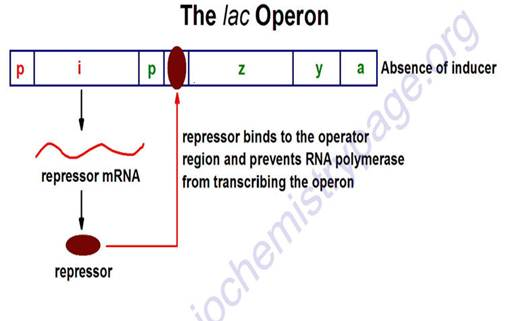

AMBE 101 :: Lecture 11 :: GENE EXPRESSION

Is the process by which information from a gene is used in the synthesis of a functional gene product. These products are often proteins, but in non-protein coding genes such as rRNA genes or tRNA genes, the product is a functional RNA. The process of gene expression is used by all known life - eukaryotes (including multicellular organisms), prokaryotes (bacteria and archaea) and viruses - to generate the macromolecular machinery for life. Several steps in the gene expression process may be modulated, including the transcription, RNA splicing, translation, and post-translational modification of a protein. Gene regulation gives the cell control over structure and function, and is the basis for cellular differentiation, morphogenesis and the versatility and adaptability of any organism. Gene regulation may also serve as a substrate for evolutionary change, since control of the timing, location, and amount of gene expression can have a profound effect on the functions (actions) of the gene in a cell or in a multicellular organism.
In genetics, gene expression is the most fundamental level at which genotype gives rise to the phenotype. The genetic code is "interpreted" by gene expression, and the properties of the expression products give rise to the organism's phenotype.
Transcription (Video)
The gene itself is typically a long stretch of DNA. It is a blueprint for the production of RNA. The production of RNA copies of the DNA is called transcription, and is performed by RNA polymerase, which adds one RNA nucleotide at a time to a growing RNA strand. This RNA is complementary to the template 3' → 5' DNA strand,[1] which is itself complementary to the coding 5' → 3' DNA strand. Therefore, the resulting 5' → 3' RNA strand is identical to the coding DNA strand with the exception that thymines are replaced with uracils in the RNA. A coding DNA strand reading "ATG" is transcribed as "UAC" in RNA.
- Initiation
- 30S initiates binding to mRNA.
- locates Shine-Dalgarno sequence (3-9 bases near 5' end of mRNA).
- ribosome finds first AUG codon.
- 50S ribosome binds.
- tRNA carries N-formylmethione to first position
- Elongation
- 2 adjacent sites on ribosome: P and A site.A site accepts a new tRNA-AA.Psite holds existing chain peptide transferred from P site tRNA to A-site AA
- enzyme activity is in ribosomal RNA, not protein
- also required: Energy (GTP) and elongation factors
- Termination
- reach a "stop codon" UAG, UAA, or UGA
- no t-RNAs for release, but release factors required
- Net cost: 4 phosphate bonds/amino acid added!
- B. Genetic Code
- AUG = universal "start" codon
- UAG, UAA, UGA = "stop" codons
- A few messages in bacteria use GUG as start, but still need Shine-Dalgarno sequence, stil code for N-formylmethionine.
Classic example: The lac operon (Video)
- gene is regulated by negative control; in absence of specific repressor, gene is transcribed just like constitutive gene. In order to regulate, must add specific block. Must say "no"; otherwise gene is not down-regulated.
- Lactose = milk sugar, disaccharide made of galactose + glucose. In order to metabolize lactose, cells must produce enzyme ß-galactosidase, split lactose into galactose + glucose
- Observation: add lactose to cells: within minutes, ß-galactosidase enzyme appears, also lac permease in membrane, and a third protein, transacetylase. Level of ß-galactosidase enzyme can accumulate to level of 10% of cytoplasmic protein
- Explanation: in absence of lactose (= inducer), lac repressor blocked operator site.
- Lac repressor is allosteric protein. Coded for by another region of DNA (constitutive gene, weak promoter, low level of expression)
- Effector molecule = Inducer is lactose (actually allolactose, or analog such as IPTG) binds to repressor protein, repressor released, RNA is made, all genes turned on as unit
Some genes are regulated by activator proteins
- genes with weak promoters are rarely transcribed.some such genes can be activated by activator protein, causes RNA polymerase to bind more tightly.often there are two components to such regulation: a sensor protein and an activator protein. The activator protein is inactive until phosphorylated by the sensor, then it activates transcription, gene product is made.
Lac operon – in presence of inducer ( lactose)
Lac operon – in absence of lactose

Role of mRNA
Carries coding information for amino acids = codons, 3 adajacent nucleotide bases Example: AAA, AGU, etc.leader sequence on mRNA (called Shine-Dalgarno sequence) binds to complementar sequence on small ribosome subunit.
Role of ribosome
acts as a "decoding box" or "tape player" for the information in mRNA30S & 50S subunits (= 70S)30S has 16S RNA + 21 proteins.50S has 23S & 5S RNA + 34 proteins.
Role of tRNA
- structure: 4 loops, anticodon, AA binding site
- ~ 60 types in bacteria (>100 in mammals)
- only 73-93 nucleotides long
- some modified bases: pseudouridine, inosine, others
- modified after transcription
- extensive hairpin loops
- anticodon site: recognizes codon on mRNA
- AA added by enzyme: AA-tRNA activating enzymes
- ATP required, forms AA-AMP + PP, then AA-tRNA + AMP
| Download this lecture as PDF here |